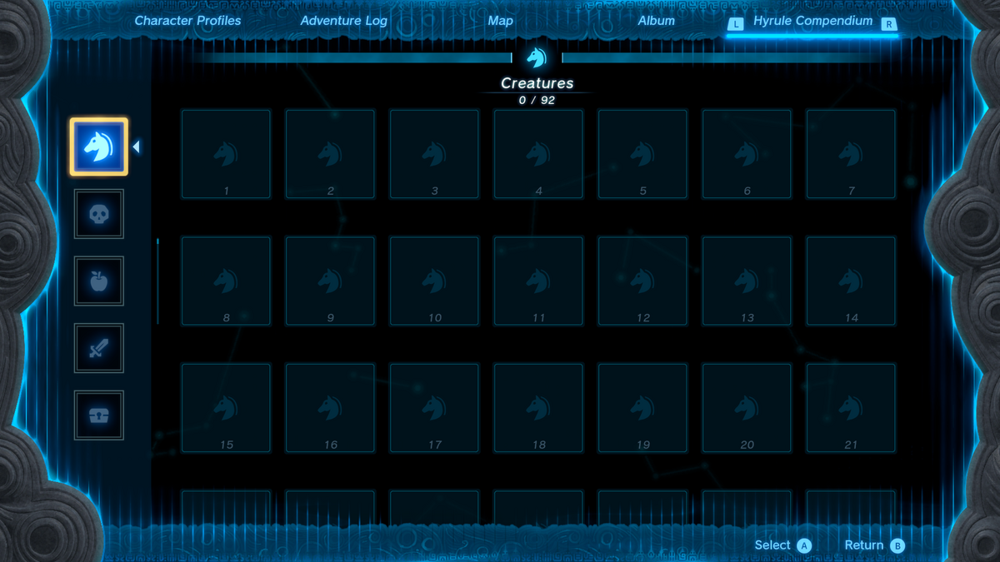

图：想让松达做模型，先得有一张留在相册里的照片。
📑 本篇目录
先说结论：拍一张波克布林的照片
吉尔顿搬到一始村了，想给村民办一场怪物模型展览，第一个模型就是波克布林。先解锁拍照功能，再完成微达的独立和寻找魔犹伊的遗失物，等吉尔顿搬到一始村；去一始村找吉尔顿和松达接任务，拍一张波克布林的照片给松达，他照着照片做模型，搬上展示台，听完吉尔顿的介绍就能领怪物精华。
| 阶段 | 要做的事 |
| 前置 | 解锁拍照功能，完成微达的独立和寻找魔犹伊的遗失物，吉尔顿搬到一始村 |
| 第一步 | 去一始村北侧舞台旁，找吉尔顿和松达接任务 |
| 第二步 | 去乌尔利山拍一张波克布林的照片，留在相册里 |
| 第三步 | 把照片给松达，他照着照片做模型 |
| 第四步 | 用究极手把模型搬上展示台，听吉尔顿介绍，领怪物精华 |
接取与奖励
| 项目 | 内容 |
| 接取 | 一始村北侧舞台旁，找吉尔顿和松达交谈（前置：解锁拍照功能，完成微达的独立和寻找魔犹伊的遗失物，吉尔顿搬到一始村） |
| 奖励 | 怪物精华×1 |
第一步：先满足前置，再去一始村
这个系列有三个前置：先解锁拍照功能（完成地底拍照片），再完成微达的独立和寻找魔犹伊的遗失物，吉尔顿才会搬到一始村。三件事都做完了，再去一始村北侧的舞台旁找吉尔顿和松达，他俩会告诉你，吉尔顿想给村民做怪物模型展览，第一个模型就是波克布林。

图：先解锁拍照功能，再完成微达的独立和寻找魔犹伊的遗失物。
第二步：去乌尔利山拍一只波克布林
从乌尔利山鸟望台出来往前走，草地上就有一只蓝色波克布林。只要是波克布林就行，什么颜色都算，拿出相机拍一张。照片必须留在相册里，删了松达就做不了模型；只登记到图鉴里是不够的，相册里的照片得留着。
第三步：把照片给松达，让他做模型
带着照片回一始村找松达，他会照着照片做一个波克布林模型。等他做好，模型就放在舞台旁边。

图：一始村在阿卡莱高地，吉尔顿和松达在村子北侧的舞台旁。
第四步：把模型搬上展示台
松达做好模型后，用究极手把它搬到展示台上，再去找吉尔顿说话。他会召集村民，给大伙儿介绍这个波克布林模型，介绍完了任务就完成，找他领怪物精华。
关键信息表
| 项目 | 内容 |
| 接取地点 | 一始村北侧舞台旁，找吉尔顿和松达 |
| 前置 | 解锁拍照功能（地底拍照片），完成微达的独立和寻找魔犹伊的遗失物，吉尔顿搬到一始村 |
| 拍照对象 | 波克布林，什么颜色都算 |
| 拍照规则 | 照片必须留在相册里，删了松达做不了模型；只登记到图鉴里不够 |
| 做模型 | 把照片给松达，他照着照片做模型；做好后用究极手搬上展示台 |
| 奖励 | 怪物精华×1 |
| 之后 | 做完 I，再去找吉尔顿接 II |
容易翻车的地方
- 没先去接任务就跑去拍照——先到一始村接任务再去拍最稳妥。
- 照片删了——照片必须留在相册里，删了松达做不了模型，只登记到图鉴里是不够的。
- 拍错了怪物——要拍波克布林，其他怪物不算，颜色不限。
- 模型做好了没搬上台——用究极手把模型搬到展示台上，再找吉尔顿说话。
一句话总结
先解锁拍照功能、做完微达的独立和寻找魔犹伊的遗失物，去一始村找吉尔顿和松达接任务，拍一张波克布林的照片给松达做模型，搬上展示台，听完介绍领怪物精华。